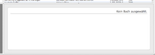

Zusammenfassung
Das Grundgerüst der graphischen Oberfläche von Books besteht
aus 4 Teilen - dem Fenster für Bücherlisten, der Büchersammlung,
der Zusammenfassung und dem Titelbild. Unten rechts befindet sich das
Zusammenfassungsfenster, das wiederum zusätzliche Informationen zu den
ausgewählten Büchern anzeigt.

Sollten Sie kein Buch ausgewählt haben, erhalten Sie die Meldung „Kein
Buch ausgewählt” und es werden keine zusätzlichen Informationen angezeigt.
Um sich zusätzliche Informationen anzeigen zu lassen, wählen Sie ein
Buch aus der Büchersammlung aus und klicken dieses an, so daß der Eintrag
blau hinterlegt wird. Haben Sie mehrere Bücher ausgewählt, werden der
Titel und die Autoren der ausgewählten Bücher angezeigt.
Anzeigestil der Zusammenfassung anpassen
Der Anzeigestil der Zusammenfassung wird über Erweiterungen gesteuert.
Angaben der Zusammenfassung anpassen
Die jeweiligen Angaben, die in der Zusammenfassung angezeigt werden, werden standardmäßig von der jeweiligen Erweiterung für den Anzeigestil gesteuert. Sie können aber auch eigene Angaben verwenden. Nutzen Sie bitte dazu den Reiter „Details” innerhalb des Einstellungsfensters.